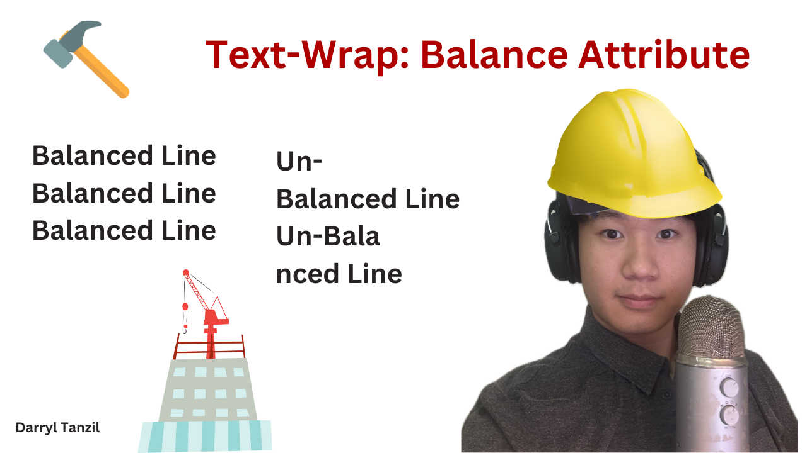

Beauty in Balancing: Text-Wrap Balance Attribute
The text-wrap: balance attribute is an essential addition to any web developer's toolbox for responsiveness.
It provides a small but noticeable addition to any containers you have by equalizing the length of every line in your container,
whenever it changes shape. Let's stick this attribute to your memory by imagining it as a tool in the form of a hammer.
🎯 Aiming the Hammer: Choosing Where to use the Attribute
For titles, tooltips, or containers in areas that you need to make clear, this attribute reduces visual clutter and increases visibility. Have viewers with different devices, each with their own unique aspect ratios? This attribute allows the length of lines to be consistent, regardless of device size.
Apart from these examples, if you notice an excessive amount of <wbr> or ­ attributes in your code, then use the text-wrap: balance; attribute instead to eliminate the tedium that comes with having to manually adding these attributes.
This is a very long word that needs to be broken
This is a very long word that will be broken up into balanced lines.
🔨 Nailing with Precision: Preventing Excessive Use
Great developers pick the right tool for the job. And the right tool for this current blurb is the text-wrapped attribute, because it keeps text crystal clear.
There are a number of limitations that come with using this attribute. This feature has a performance limit of 6 wrapped lines and under.
With this limit in mind, anything other then headlines and short blurbs should not be using this attribute. As well as this, make sure not to blindly use * to apply text-balancing to every element. Think selectively about what needs balancing.
🚫 Don't use a Hammer the Same Time as a Nail Puller: White-Space Attribute
Another precaution to note is that balancing text works against the white space property since one asks for no wrapping, while the other asks for balanced wrapping.
This text will not balance because the 'white-space' property has been set, stopping the 'text-wrap: balance' property from taking effect.
To prevent this from happening, one can use white-space: unset; to ensure that the whitespace attribute is not set and text-wrap does not conflict.
🏃 Hammering Takes Effort: Why the Limitation?
The browser balances the text by conducting a binary search for the smallest width not causing an addition line, stopping at one CSS Pixel. Binary Search is more CPU intensive then regular CSS styling, which is why it should be used sparingly.
For those interested in algorithms, you can see binary search in action in my video here.🏠 Drive the Nail Home: Conclusion & References
Next time you develop for the web, think of the tools you can use to build your product. For the text-wrap: balance; attribute's case, the 6 line limit tradeoff has to be considered along with the benefits of having visually clear titles and blurbs. Regardless, it never hurts to have another tool at your disposal 😉
Sources:
Chrome's documentation on text-wrapMozilla's documentation on text-wrap
W3C Editor's Draft